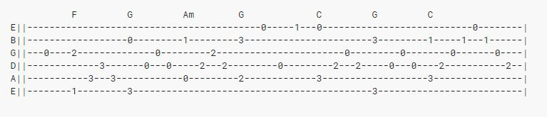

Reading Tablatures
While strumming different chords can lead to endless possibilities, there are still other different guitar playing techniques to choose from. One of these techniques is called Fingerstyle.
Fingerstyle is a more difficult technique of guitar playing that requires complex hand coordination from both hands. This is because rather than doing a full down strum, fingerstyle requires you to pluck separate strings.Because of the special plucking style, the fingerstyle technique requires you to read tablatures instead of chord diagrams. Luckily for you, guitar tablatures are relatively easy to read.
Tablatures look quite different from chord diagrams. Notice how the first low E string ( the thickest string closest to your face) is on the bottom of the diagram rather than the top. The numbers sprawled across the tablatures represent the fret space you're supposed to put your finger on.
Tablatures are like sentences. They are read from left to right. Whenever two or more numbers are vertically aligned, such as the 2 and 1 in the beginning, that means that they are to be played simulatenously. Make sure you pluck the strings with your strumming hand.
Go back to top